HTML Lesson 2: Node.Js and WebStorm Installation
What is Node.js?
Node.js is a runtime environment that allows you to run JavaScript code outside the browser — like on your computer or a server. In other words, while JavaScript was originally made to run in the browser, Node.js lets you run JavaScript anywhere — especially on the server side.
Some key features of Node.js are:
- compiles JavaScript to machine code
- comes with Node Package Manager, the world's largest software registry (used to install libraries like Express)
- designed for performance — handles many connections at once without waiting (asynchronous)
- runs on Windows, macOS, and Linux.
- Full-stack developers can use the same language on front-end and back-end
Usually, we use Node.js for building web servers and APIs, built real-time apps like chat applications, construct microservices or backend services for web and mobile apps.
Do not worry if you can not understand all the terms. In our case, we just need to use Node.js as a simple Web server. So let's proceed with the installation.
Node.js installation
First, we need to visit the official Node.js website: https://nodejs.org.
Click on the LTS (Long Term Support) button which will download a stable and reliable version of Node.js recommended for most users.
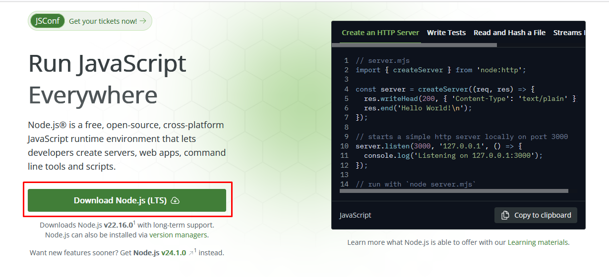
After you download it, run the .msi installer assuming that you are running Windows Operating System. Follow the prompts:
- accept the license agreement
- Choose installation path (default is fine).
- Select components (leave defaults checked).
- Optionally, check Add to PATH (recommended).
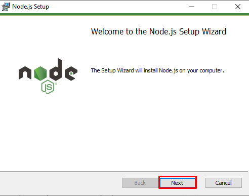
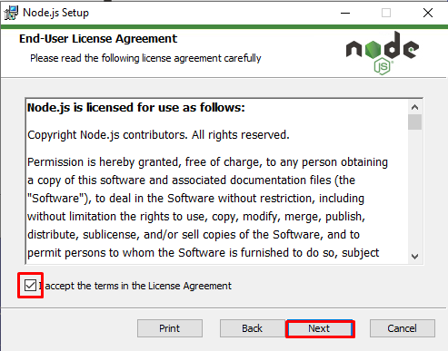

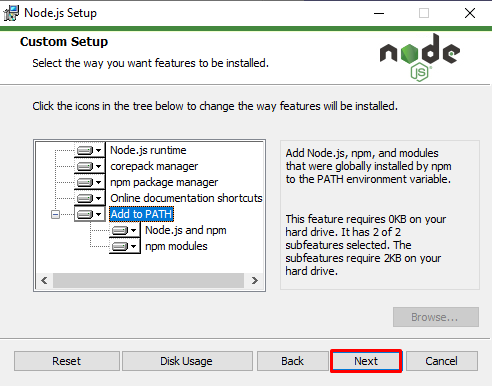
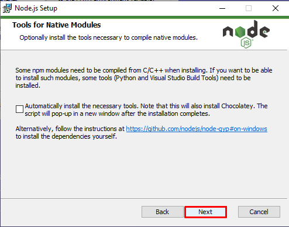
Click Install.
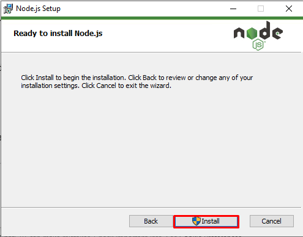
Once installation finishes, click Finish.
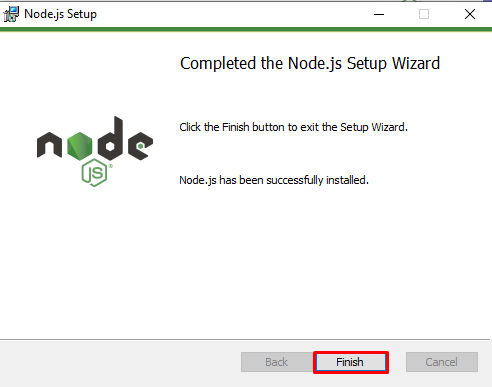
Let's verify the installation by typing the following two commands in a terminal (CMD) window.
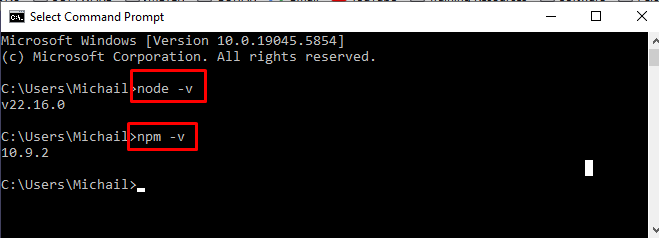
WebStorm Installation
WebStorm is a powerful, professional IDE (Integrated Development Environment) made by JetBrains, designed specifically for JavaScript, TypeScript, and modern web development. In simple terms, WebStorm is a coding tool that helps you write, debug, and manage web projects — smarter and faster.
Some of the fueatures that WebStorm has to offer us are:
- Smart Code Editor - Autocompletion, suggestions, real-time error detection
- Powerful Debugger - Built-in debugger for client-side and Node.js apps
- Integrated Tools - Version control (Git), terminal, npm, ESLint, Prettier
- Framework Support - React, Angular, Vue, Express, Next.js, and more
- Testing Support - Mocha, Jest, Cypress
- Plugin Ecosystem - Customize with hundreds of plugins and themes
Overall, WebStorm is ideal for Front-end development (React, Vue, Angular), Back-end development with Node.js or for Full-stack JavaScript/TypeScript projects.
WebStorm is absolutely free for home projects and personal learning and practice. If you use it in a professional environment (in a company) then you need to pay a small fee to obtain a valid license.
Go to the official site: WebStorm download
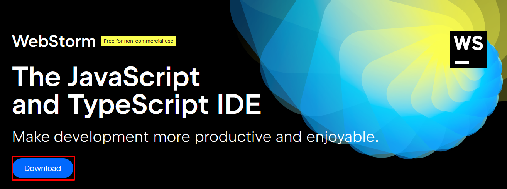
Run the .exe installer and accept the default values during the installation process.
Before you start WebStorm, create an empty folder on your hard drive. That is going to be the place where we will save our web projects.
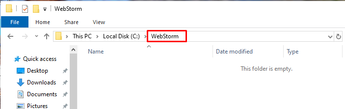
Start WebStorm and click on the New Prject button to create a new project.
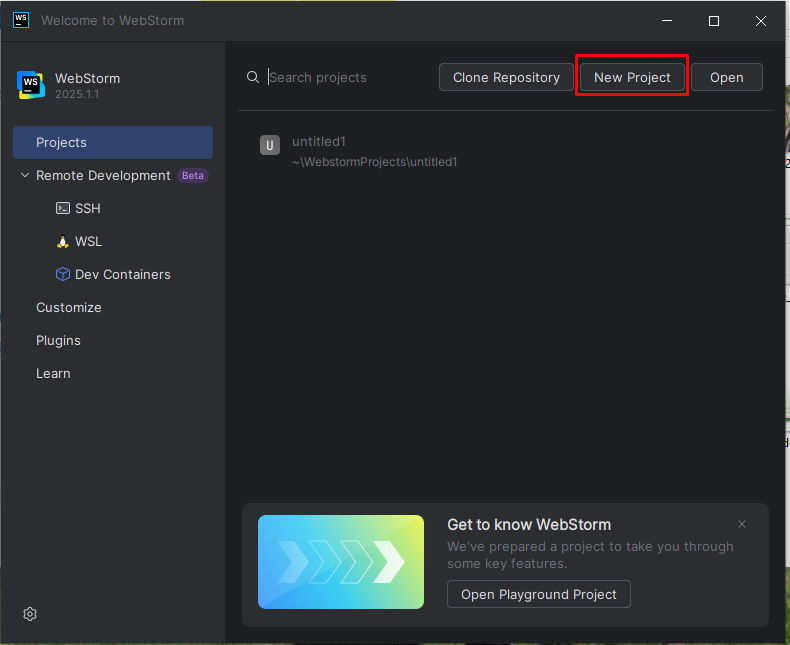
From the Generators List choose Express. This option will allow us to use Node.js as a Web Server automatically without any further manual configuration. Please notice that WebStorm has already detected the Node.js installation. Make sure that on the Location field you have chosen the folder you have created on the previous step.
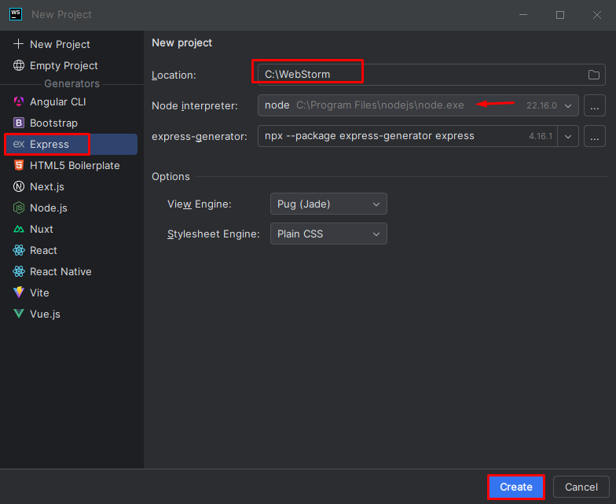
After few seconds the project will be ready to be executed. Our environment is completed and we have all the necessary tools to develop professional looking websites. However, there is no html file included on the project yet to show. We will start creating our first web page from the next lesson.
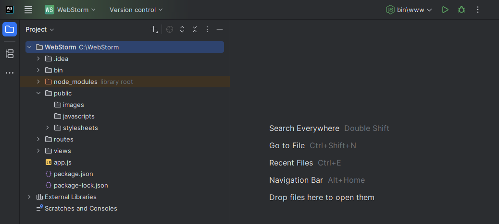
📝 Quiz
🤖 Βοήθεια από τον AI Βοηθό
Ερώτηση: Τι κάνει το <h1> tag;
Απάντηση: Δημιουργεί μια επικεφαλίδα επιπέδου 1. Είναι σημαντικό για τη δομή και SEO μιας σελίδας.
Ερώτηση: Μπορώ να έχω πολλά <h1> σε μια σελίδα;
Απάντηση: Τεχνικά ναι, αλλά συνιστάται να έχεις μόνο ένα κύριο <h1> για καλύτερη προσβασιμότητα.